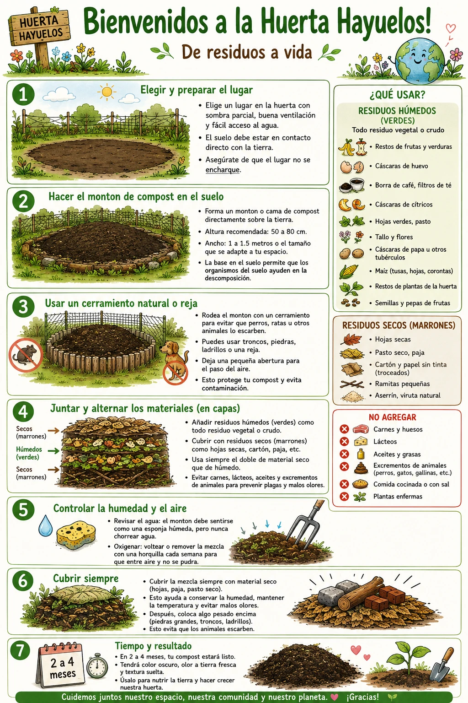

Guía de Compostaje
El proceso paso a paso para transformar nuestros residuos en abono para la tierra
El proceso paso a paso para transformar nuestros residuos en abono para la tierra
Pasa el mouse o toca una burbuja verde para ver en grande cada paso y cada residuo.

Ven a nuestra próxima jornada de compostaje y practicamos juntos.
Contáctenos